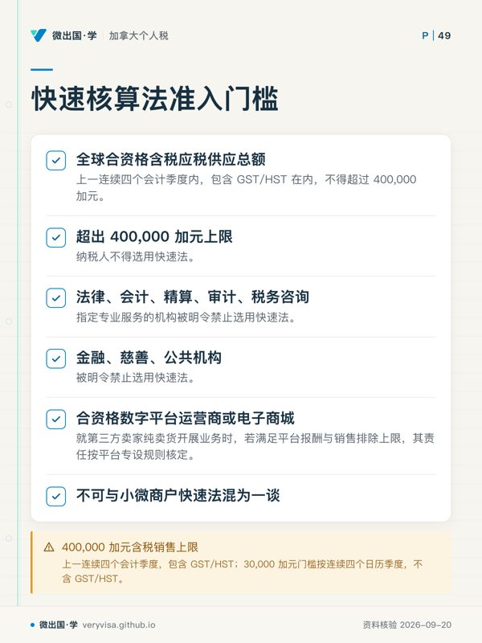
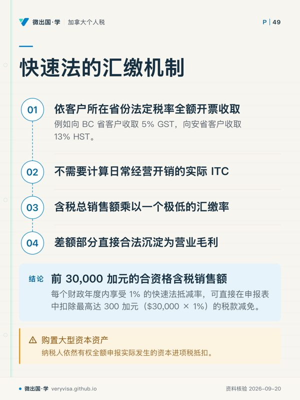
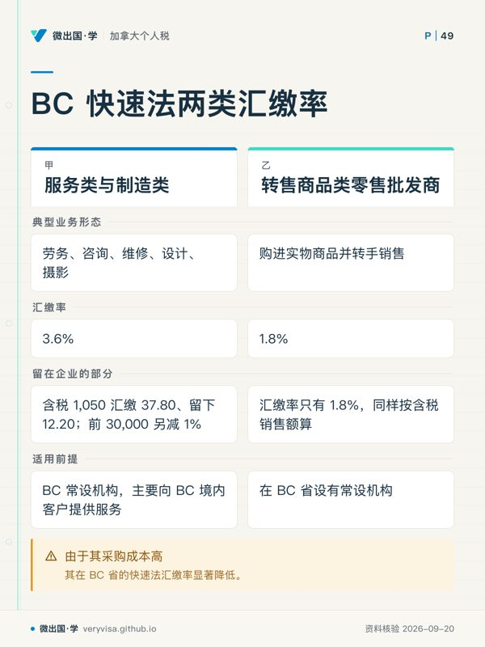
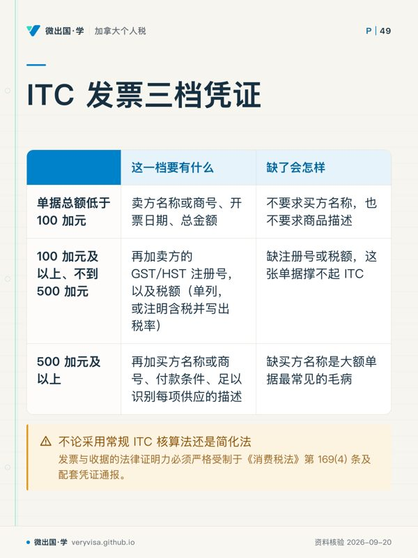
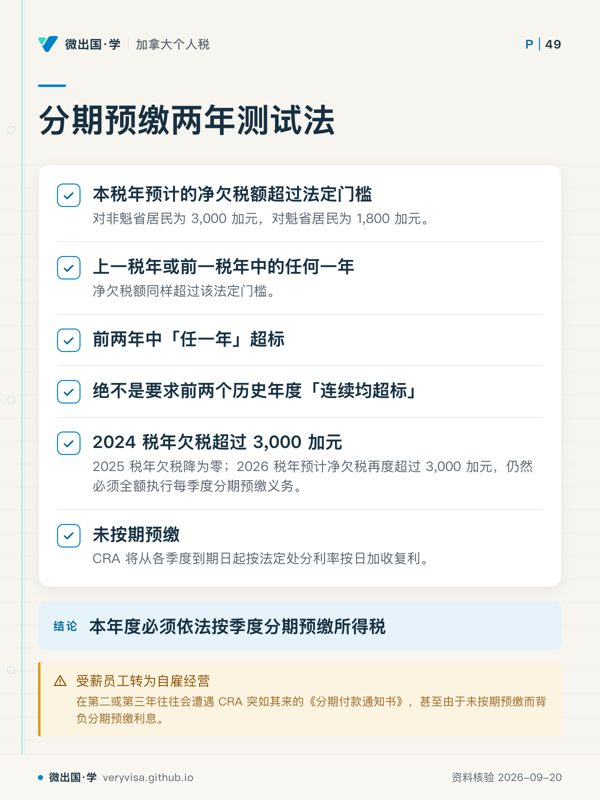

核实日期：2026-10-30｜现行口径：2026 税年（自雇与小微企业的 GST/HST 合规与争议救济）。 法条依据指向加拿大《消费税法》(Excise Tax Act, RSC 1985, c. E-15) Part IX（GST/HST 专编）第 148 条、第 169 条、第 227 条、第 240 条、第 245 条与《加拿大税务法院法》(Tax Court of Canada Act, RSC 1985, c. T-2) 第 18 条及第 18.3001 条；数值与政策执行标准指向加拿大税务局 (Canada Revenue Agency, CRA) 指南 RC4022、RC4058 与现行程序指令。
自雇的独资经营者（sole proprietor）和合伙人，要同时应付两套税：所得税，和商品及服务税／统一销售税（GST/HST）。很多刚开始自雇的人把精力全放在 T1 上 Line 13500 至 Line 14300 的经营收支，却忽略了 GST/HST 由《消费税法》（Excise Tax Act）单独管：什么时候过了小供应商门槛、进项税抵扣（ITC）的收据够不够格、所得税要不要分期预缴，任何一处没跟上，补税之外还要付罚款和利息。
为了减轻小商户的记账负担，GST/HST 有「快速核算法（Quick Method）」和「简化 ITC 申报法（Simplified Method）」两种简便算法；专业人士在制品（Work in Progress, WIP）的延期计税过渡期已经结束；和 CRA 的争议走到税务法院时，GST/HST 争议在 50,000 加元以内可以选非正式程序（Informal Procedure）。下面按这个顺序讲：小供应商 30,000 加元门槛怎么数、过线后几时开始收税和注册；BC 的快速法汇缴率 3.6%（服务）与 1.8%（转售商品）和首 30,000 加元的 1% 抵减；ITC 收据在 100 加元与 500 加元两道线上各要写什么；所得税分期预缴的两年测试；税务法院非正式程序的门槛。
想检验自己，可以做本板块的练习题（共 82 道）：按主题练习。
一、GST/HST 注册义务：小供应商门槛与申报周期
1.1 小供应商资格与 30,000 加元门槛核算
依据加拿大《消费税法》第 148 条，在加拿大境内开展商业活动的所有个人与实体，原则上必须就其应税商品与服务（Taxable Supplies，包含零税率应税品，但不含免税品 exempt supplies）注册 GST/HST 账户并依法代征代缴税款。唯一的豁免情形是符合小供应商（Small Supplier）资格。
小供应商的核心门槛是全球应税供应额不超过 30,000 加元。在 2026 税年核定小供应商身份时，必须严格执行「连续四季度滚动测试」与「单季度突增测试」的双重检验机制： 1. 连续四个日历季度滚动测试：如果在过去的连续四个日历季度（Four Consecutive Calendar Quarters）中，企业及其所有关联实体（Associates）在全球范围内实现的应税供应总额（不含 GST/HST、商誉转让或资本资产变现）始终未超过 30,000 加元，则该纳税人保持小供应商身份，免于强制注册。一旦某个连续四季度的总额超过 30,000 加元（但没有单季超过），纳税人在超额那个季度结束后的下一个月月底丧失小供应商资格；此后做的第一笔应税供应那天，就是最迟的注册生效日，从那天起收 GST/HST，并在生效日后 29 天内办好注册（CRA「When to register for and start charging the GST/HST」页的例子：第一季度末累计超额，4 月 30 日丧失资格，5 月 1 日的第一笔销售起收税）。 2. 单一季度突破测试（突发性超额）：如果企业在单个日历季度内的应税销售额就直接跨越了 30,000 加元门槛，则企业从发生导致超额的那笔销售交易的当天起，即刻丧失小供应商资格！纳税人必须从这笔交易起向客户收取 GST/HST（注册生效日最迟就是这一天），并在生效日后 29 天内办好注册。
1.2 申报频率的法定划分标准
GST/HST 注册人必须向 CRA 提交定期的 GST34 消费税申报表。申报周期的长短由纳税人上一财年或上四个季度的全球应税销售总额决定（《消费税法》第 245 条）： - 默认年报（Annual Filer）：年度应税销售额在 1,500,000 加元及以下的纳税人，系统默认赋予按年申报资格。独资经营者的年报截止日通常与个人所得税自雇申报日一致（次年 6 月 15 日），但应缴税款结清日依然严格锁定在次年 4 月 30 日。 - 默认季报（Quarterly Filer）：年度应税销售额超过 1,500,000 加元但在 6,000,000 加元及以下的纳税人，默认必须按公历季度申报，申报及税款结清日为每个季度结束后的一个月内。 - 强制月报（Monthly Filer）：年度应税销售额严格超过 6,000,000 加元的大型企业，丧失年报与季报资格，强制实行按月逐月申报。注意：年报与季报商户可根据自身现金流与进项退税诉求，主动向 CRA 申请提升申报频率（例如退税型出口商主动选择月报以便快速退税）。
二、小微企业快速核算法：费率阶梯与 BC 省实务
为了免除小微自雇商户对每一笔日常开销逐一统计进项税额（ITC）的繁重簿记负担，CRA 依据《消费税条例》推行了快速核算法（Quick Method of Accounting）。
2.1 准入门槛与 400,000 加元含税销售上限
纳税人若要申请选用快速核算法，必须满足严格的规模与业务形态限制： - 含税销售资格上限：包括独资经营者在内的小企业及其关联方，在上一连续四个会计季度内，其包含 GST/HST 在内的全球合资格含税应税供应总额不得超过 400,000 加元。超出 400,000 加元上限的纳税人不得选用快速法。 - 业务形态排除：提供法律、会计、精算、审计、税务咨询等指定专业服务的机构，以及金融、慈善、公共机构等，被明令禁止选用快速法。 - 数字平台的代收规则是另一回事：数字平台运营商代第三方卖家收取 GST/HST 的义务有专门规则，与小商户自己选不选快速法不是一套制度。
2.2 快速法的汇缴机制与首 30,000 加元 1% 抵减
在快速核算法下，自雇商户依然按照客户所在省份的法定税率全额开票收取 GST/HST（例如向 BC 省客户收取 5% GST，向安省客户收取 13% HST）。但是在向税务局汇缴税款时，纳税人不需要计算日常经营开销的实际 ITC，而是直接把含税总销售额乘以一个固定的汇缴率（remittance rate）。收到的税与汇缴额之间的差额留在商户手里，但它要计入所得税上的营业收入。
另外，每个财政年度里，前 30,000 加元合资格含税销售额可再享 1% 的抵减，也就是每年最多在汇缴额里少交 300 加元（30,000 × 1%）。
2.3 BC 省常设机构的快速法汇缴率：服务类与转售类
在不列颠哥伦比亚省（BC），省内不征收 HST，联邦 GST 税率为 5%。对于在 BC 省设有常设机构（Permanent Establishment）、且主要向 BC 境内客户提供商品与服务的自雇商户，快速法细分为两类核心汇缴率： 1. 提供服务的企业：主要提供劳务、咨询、维修、设计、摄影等、不大量进货的商业形态。在 BC 境内的快速法汇缴率为 3.6%。注意 3.6% 乘的是含税金额：开票 1,000 加元加 5% GST 共 1,050 加元，汇缴 1,050 × 3.6% ＝ 37.80 加元，收到的 50 加元税款里留下 12.20 加元（约合税前销售额的 1.22%），用来补偿没有单独申报的日常进项税；前 30,000 加元的 1% 抵减另算。 2. 购进商品转售的企业：转售商品的采购成本（含税）至少占应税销售收入的 40%。因为进货多、进项税多，BC 的快速法汇缴率只有 1.8%，同样按含税销售总额计算。
注意：快速法下放弃的是水电、耗材等日常经营支出的逐笔 ITC；购置资本财产（例如 CCA Class 8 设备、Class 10 车辆）时付的 GST/HST，仍可另外申报 ITC。
三、进项税凭证审计：100 与 500 加元梯级标准及 WIP 存货核算
3.1 简化 ITC 申报法的适用范围
对于不符合或未选择快速法的商户，CRA 提供了另一种簿记减负工具——简化 ITC 申报法（Simplified Method for Claiming ITCs）。采用该法的前提是：纳税人在上一财年的全球应税销售额不得超过 1,000,000 加元，且其上一财年在加拿大境内的应税采购总额不得超过 4,000,000 加元。符合条件者可直接用含税采购总额乘以 5/105（在 GST 省份）粗算可抵扣税额，无需对发票上的税金单独过账。
3.2 ITC 发票单据的三档审计法定凭据
不论采用常规 ITC 核算法还是简化法，CRA 在对企业进项税抵扣进行合规审计时，发票与收据的法律证明力必须严格受制于《消费税法》第 169(4) 条及配套凭证通报（Information Requirements）。税法确立了严密的三档发票证明标准：
- 第一档（单据总额低于 100 加元）：卖方（或中介）名称或商号、开票日期（没有发票的，写税款应付日）、总金额。不要求买方名称，也不要求商品描述。
- 第二档（100 加元及以上、不到 500 加元）：第一档的全部信息，再加卖方（或中介）的 GST/HST 注册号，以及税额——要么单列 GST/HST 金额，要么注明金额已含税并写出税率。
- 第三档（500 加元及以上）：第二档的全部信息，再加买方的名称或商号（或其授权代理人的名称）、付款条件，以及足以识别每项供应的描述。
依据：《进项税抵扣信息（GST/HST）条例》（Input Tax Credit Information (GST/HST) Regulations，SOR/91-45）第 3 条。收据上的卖方注册号是假的或已注销，这笔 ITC 会被追回并计息；可以在 CRA 的 GST/HST 注册号查询工具里先核对。
3.3 专业人士 WIP 开票制取消的平稳过渡
在自雇经营所得的会计核算中，会计师、牙医、律师、医生、兽医和脊椎按摩师（chiropractor）这六类「指定专业人士（designated professionals）」在历史上曾享有依据《所得税法》第 34 条选择采用开票制（Billed-Basis Accounting）的特权，即在工程或咨询服务尚未正式开票向客户收款前，账面积累的在制品（Work in Progress, WIP）无需作为存货计税，从而达到合法延后确认收入的效果。
然而，这一特权自 2017 年 3 月 22 日起被联邦税法正式废止，并设立了为期五年的逐年平摊过渡机制。在 2024 至 2026 税年，该项历史过渡期早已彻底结束，纳税人已完全不得依赖 WIP 开票制过渡规则延后纳税。在 2026 税年，所有专业人士在期末必须严格按照会计成本与公允可变现净值孰低法，将年末未完工在制品的工时与劳务成本核算入期末存货并计入当期经营收入，确保经营所得计量的真实与公允。
四、分期预缴与司法救济：两年测试与 TCC 非正式诉讼
4.1 个人与自雇所得税分期预缴的「两年滚动测试」
许多由受薪员工转为自雇经营的纳税人，在第二或第三年往往会遭遇 CRA 突如其来的《分期付款通知书》（Instalment Notice），甚至由于未按期预缴而背负沉重的分期预缴利息（Instalment Interest）。
理解分期预缴触发机制的关键在于《所得税法》第 156 条规定的两年测试法（Two-Year Test）： - 触发条件：当纳税人在本税年（Current Year）预计的净欠税额（Net Tax Owing）超过法定门槛（对非魁省居民为 3,000 加元，对魁省居民为 1,800 加元），并且在上一税年（Last Year）或前一税年（Prior Year）两个历史年度中的任何一年，其净欠税额同样超过了该法定门槛，则纳税人在本年度必须依法按季度分期预缴所得税。 - 常见误区警示：必须严谨厘清——税法考核的是前两年中「任一年（Either of the two preceding years）」超标，绝不是要求前两个历史年度「连续均超标」！如果纳税人在 2024 税年欠税超过 3,000 加元，在 2025 税年因加大 RRSP 供款使得欠税降为零，但在 2026 税年自雇收益回升导致预计净欠税再度超过 3,000 加元，由于历史前两年中有 2024 年这一年超标，该纳税人在 2026 税年仍然必须全额执行每季度的分期预缴义务，否则 CRA 将从各季度到期日起按法定处分利率按日加收复利。
4.2 加拿大税务法院（TCC）非正式程序与 50,000 加元争议上限
自雇收支被剔除、或 GST/HST 进项税被审计调整，提出异议（Notice of Objection）后 CRA 上诉处（Appeals Branch）仍维持原评税的，下一步是上诉到税务法院。
向加拿大税务法院（Tax Court of Canada, TCC）上诉有两条轨道：一般程序（General Procedure）与非正式程序（Informal Procedure）。对小企业和自雇人士而言，非正式程序的好处是： 1. 成本与程序：非正式程序不收立案费，不要求请律师——可以自己出庭，也可以由任何代理人（例如会计师）代为出庭；没有正式的证据开示（discovery）程序，审理较快。 2. 争议标的额法定门槛与双轨分野：根据《加拿大税务法院法》第 18 条与第 18.3001 条，非正式程序受到严格的案件争议金额限制，且在所得税与消费税之间设立了截然不同的天花板： - 联邦个人与企业所得税（Income Tax）：非正式程序受理的争议税款与罚金（不含利息）本金上限为 25,000 加元； - GST/HST 争议：非正式程序的争议金额上限是 50,000 加元。
GST/HST 争议金额不超过 50,000 加元的，可以按《税务法院法》第 18.3001 条选非正式程序；超过的，也可以主动把争议限缩在门槛以内来换取非正式程序。
五、消费税与税务程序关键指标决策矩阵
2026 税年的关键门槛汇总如下：
| 业务领域与程序模块 | 核心法定门槛 / 汇缴参数 | 法定依据与实务规则要旨 |
|---|---|---|
| GST/HST 小供应商豁免 | 连续四季度或单季 $30,000 | 单季超额：从超额那笔起收税；四季度累计超额：下月月底丧失资格；都在注册生效日后 29 天内注册 |
| GST/HST 申报周期界限 | 年报：≤ $1,500,000；季报：≤ $6,000,000 | 超过 600 万加元强制实行月报；自雇独资年报付税日仍为 4 月 30 日 |
| 快速核算法资格上限 | 全球含税销售额 ≤ $400,000 | 排除法律、会计、税务等指定专业服务；平台代收另有规则 |
| 快速法年度抵减 | 首 $30,000 享受 1% 抵减 | 每年最多少汇缴 300 加元 |
| BC 省快速法汇缴率 | 服务类 3.6%；转售类 1.8% | 按含税销售额计；资本财产的 ITC 另行申报 |
| 简化 ITC 申报资格 | 销售 ≤ $1,000,000；采购 ≤ $4,000,000 | 只简化计算，收据要件照旧 |
| ITC 凭据分级要求 | 第二档：≥ $100；第三档：≥ $500 | $100 起须有卖方 GST/HST 注册号与税额；$500 起再加买方名称、付款条件与供应描述 |
| 在制品（WIP）会计处理 | 历史开票制过渡已在 2024-2026 税年彻底失效 | 指定专业人士期末必须将 WIP 按成本与可变现净值计入存货收益 |
| 所得税分期预缴测试 | 本年预计欠税 > $3,000 且前两年任一年超标 | 前两年任一年超标即触发，不要求连续两年；未缴按日复利计息 |
| 税务法院 TCC 非正式程序 | GST/HST 争议上限 $50,000；所得税为 $25,000 | 不收立案费，可自己出庭或由非律师代理 |
延伸阅读
论坛全文：加拿大2026自雇GST/HST：3万元门槛、Quick Method与ITC
本页知识卡
不看正文也能拿到这一节的核心内容：先看导读，再看图。点图放大，左右翻页。
- 先看先看右栏的起算点，突发超额的处理不等到季度结束。
- 易漏零税率应税品计入应税商品与服务，免税品不在其中。
- 下一步去练习，分别套两种超额场景，再问持牌专业人士关联实体如何合并。

- 先看先看业务排除项；金额合格也不代表业务形态合格。
- 易漏这一上限统计小企业及其关联方，不只看单一经营主体。
- 下一步去练习，分别判断规模与行业资格，再让持牌专业人士核对平台情形。

- 先看先顺着收款到汇缴看资金去向，最后再看额外抵减。
- 易漏资本财产例子包括 Class 8 设备、Class 10 货车，别和水电、耗材一并处理。
- 下一步去练习，拿一笔含税收入演算，再把资本财产问题带给持牌专业人士。

- 先看先对业务形态，再读对应税率；不要只按行业名称猜。
- 易漏转售商品采购成本至少占总收入的 40%，否则不能只凭「卖货」归入这一类。
- 下一步去练习，拿收入与采购结构判断类别，再请持牌专业人士核对常设机构。

- 先看先看中档新增的注册号与税额，那是 ITC 能不能报的分界。
- 易漏金额按单据总额算，不是按单项商品算。
- 下一步去练习，拿三张不同金额收据逐项核验；可疑注册号带给持牌专业人士。

- 先看先核历史那一格，它决定间隔一年后是否还会触发。
- 易漏RRSP 供款只是示例里欠税降为零的原因，不是测试本身的额外条件。
- 下一步去练习，把三年净欠税额排出来，再向持牌专业人士核对预缴安排。